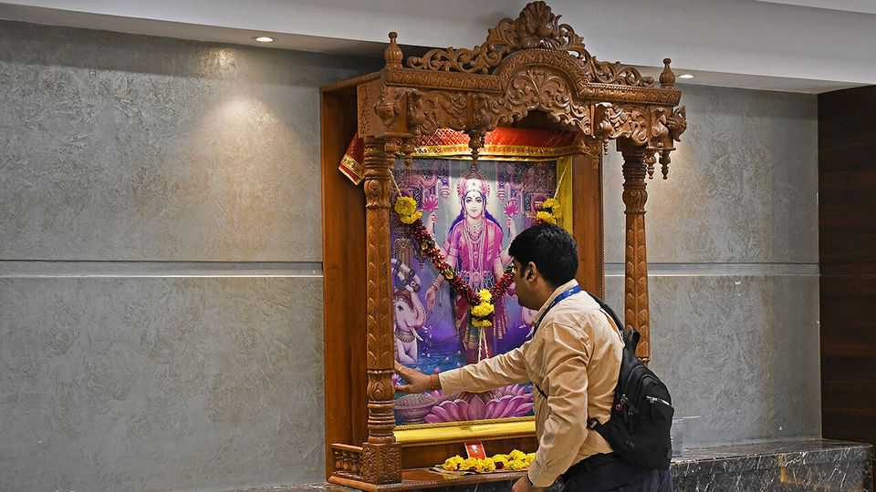

Financial astrology is a serious business in India
That is bad news for investors’ returns

Oct 1st 2026
DURING DIWALI, a Hindu festival that falls in November this year, India’s stockbrokers and their families gather for an especially auspicious one-hour trading session in which they place symbolic trades to usher in prosperity. They perform “puja” rituals to Lakshmi, the goddess of wealth, whose likeness hangs in the lobby of the Bombay Stock Exchange. Business-TV channels host astrologers who chart the movement of planets alongside fund managers speculating about earnings and interest rates.
Traders everywhere are a superstitious lot—no wonder, given how random markets can seem. Americans have lucky ties; Japanese stock-market investors look for omens in the first auction of the year; some Asian businesses pay premiums for things containing auspicious numbers. John Pierpont Morgan, the eponymous founder of a big American bank, is said to have subscribed to an astrology newsletter (even if he probably did not really say that “millionaires don’t use astrology; billionaires do”). “Technical analysis”, reading the runes of stock charts and searching for patterns such as “heads and shoulders” or a “rising wedge”, has a cult-like following on many Western trading floors.
In India, this professional propensity meets an astrology market with $7bn in annual revenues. According to a survey by Pew Research Centre, 44% of Indian adults believe in astrology. Horoscopes are drawn up the moment newborns tumble forth. Doctors try to perform C-sections in a priest-appointed lucky time-window. Cars and motorbikes are delivered to buyers at propitious moments. Why should finance be any different?
One asset manager at a large Indian provider of mutual funds uses astrology to manage his personal wealth. He describes fundamentals as the “engine” and astrology as the “steering” which offers direction. It is not uncommon for money managers to be part of WhatsApp groups run by astrologers. Or take Purvesh Shelatkar, who ran two alternative-investment funds for high net-worth individuals until his sudden death on September 27th. A self-taught practitioner, he gave astrology roughly half the weight in his investment decisions. He once bought stocks in Jindal, a steelmaker, because Mars, a planet associated with red metal, was strong in his birth chart. The stock rocketed. He likened astrology to a “fog light”: unnecessary when visibility is good, but useful when the road disappears into mist.
Retail traders have plenty of ways to brush up on the aspects and ingresses of celestial finance. Online courses promising to predict stock-market movements using astrology cost 35,000-45,000 rupees ($365-470). Online platforms bring traders, investors and astrologers together. In August one of these, InstaAstro, which has 12m registered users, raised $12m from investors. (Coincidence?) AstroTalk charges between 14 and 200 rupees a minute for consultations. It also sells merchandise: a “Dhan Yog” (financial prosperity) bracelet will set you back 699 rupees.
That is much more fun than reading the academic literature. Studies of Chinese and Taiwanese investors have shown that betting on firms linked to the auspicious number 8 and avoiding those associated with number 4 (which in Chinese is similar to the word for “death”) produces significant underperformance: investors were willing to overpay for 8-laden stocks.
Anecdote confirms academia. Hersh, a financial analyst in India (who by day uses Claude, an artificial-intelligence chatbot, to crunch numbers), tried with a chum to trade options and futures using astrology during the covid-19 pandemic. “We failed miserably,” he says.
Indian investors today have more money and more ways to put it to work than their elders, who relied on property, gold and bank deposits. But mutual funds, equities and derivatives bring greater uncertainty. AI can sift through filings and earnings calls. Quantitative models can discern patterns invisible to the human eye. Neither, though, can say for sure what happens next. Astrology cannot either. Just try telling believers that.■